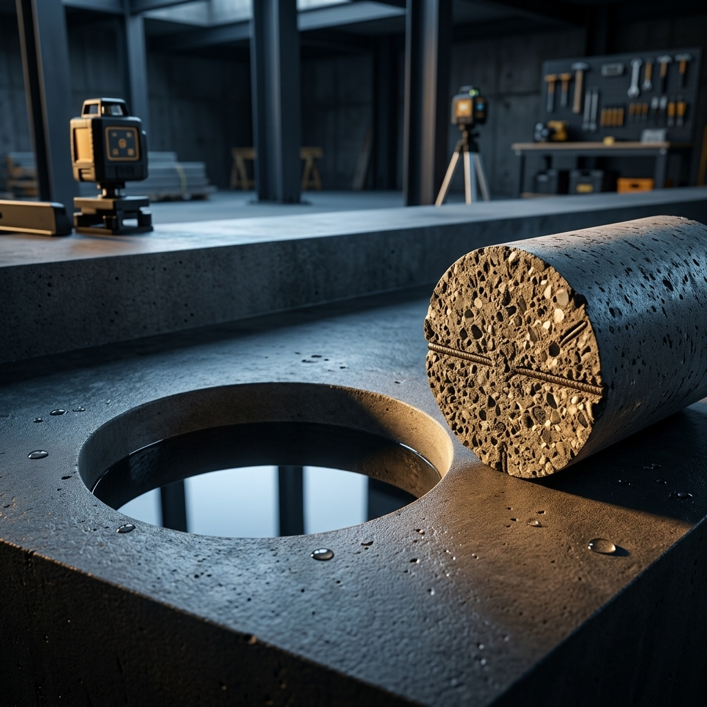
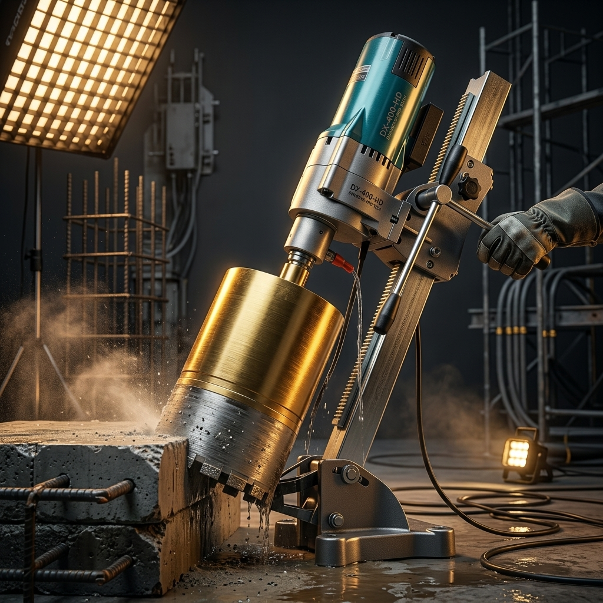
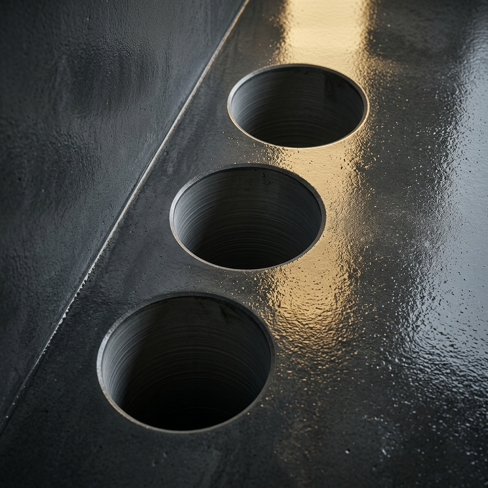
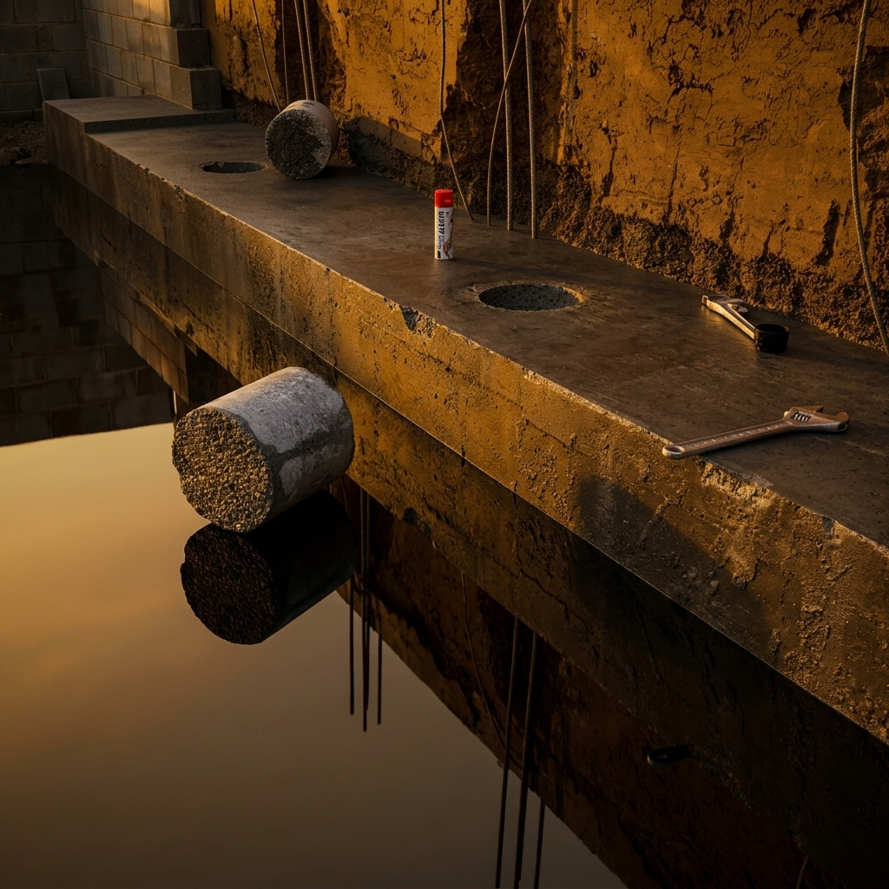

Realizamos furos sob medida de alta precisão em vigas, lajes, colunas e piscinas para passagens de tubulações hidráulicas, elétricas, ar-condicionado e instalação de gás encanado. Obras comerciais e residenciais com o melhor custo-benefício.
Cortes limpos por rotação diamantada, garantindo total integridade estrutural da obra.
Utilizamos equipamentos de ponta para perfurar lajes e vigas de concreto armado com rapidez, limpeza e exatidão milimétrica.
Furos em concreto de todos os diâmetros e profundidades para a descida de encanamentos de água limpa, esgoto e ralos.
SolicitarPerfurações precisas em colunas e vigas para a passagem e fixação de conduítes, cabos estruturados e eletrocalhas.
SolicitarAberturas perfeitamente redondas para a passagem de tubos e dutos de sistemas de climatização residenciais e industriais.
SolicitarExecução sob medida de aberturas de passagens com camisa protetora para fiação e tubos de gás encamisado residencial.
SolicitarPerfurações estruturais horizontais ou verticais, com perfuratriz rotativa diamantada. Processo suave e sem vibração.
SolicitarFuros de grande escala (como diâmetro de 250mm ou superior) para instalação de cisternas, drenos e aberturas especiais.
Solicitar
A **ASB Perfuração de Concreto** atua no setor da construção civil sob a liderança experiente de **Demerson**, oferecendo serviços técnicos de excelência para furos estruturais.
Ao contrário dos métodos tradicionais de quebra por percussão, que causam trincas e abalam a integridade do concreto armado, nós utilizamos perfuratrizes rotativas com coroas diamantadas de última geração. Isso garante perfurações suaves, limpas e perfeitamente calibradas, eliminando a necessidade de acabamentos e reformas extras.
Máquinas rotativas diamantadas que cortam armações de ferro com facilidade.
Cumprimos rigorosamente as datas acordadas para não atrasar seu cronograma.
Fundador & Especialista Técnico
Confira registros fotográficos reais de perfurações em obras industriais, comerciais e residenciais na região de Barueri e Grande SP.



Confira avaliações reais retiradas de nosso Google Meu Negócio, demonstrando nosso compromisso com a satisfação técnica e prazos.
"Contratei a ASB para fazer os furos de passagem de ar-condicionado em uma obra comercial em Barueri. Trabalho impecável, rápido e sem fazer sujeira na laje. Demerson foi extremamente prestativo."
Engenheiro Civil
"Fizeram os furos de descida de esgoto na minha residência. O furo ficou certinho, as tubulações encaixaram perfeitamente e o melhor de tudo foi não ter nenhuma trinca ou abalo no concreto."
Proprietário Residencial
"A precisão do furo de 200mm que fizeram para a rede de gás da indústria foi perfeita. Dispensa qualquer tipo de correção posterior. Equipamento profissional e equipe organizada."
Gerente de Manutenção
Fale diretamente com o **Demerson** e envie os dados da sua obra para receber uma cotação personalizada sem compromisso.